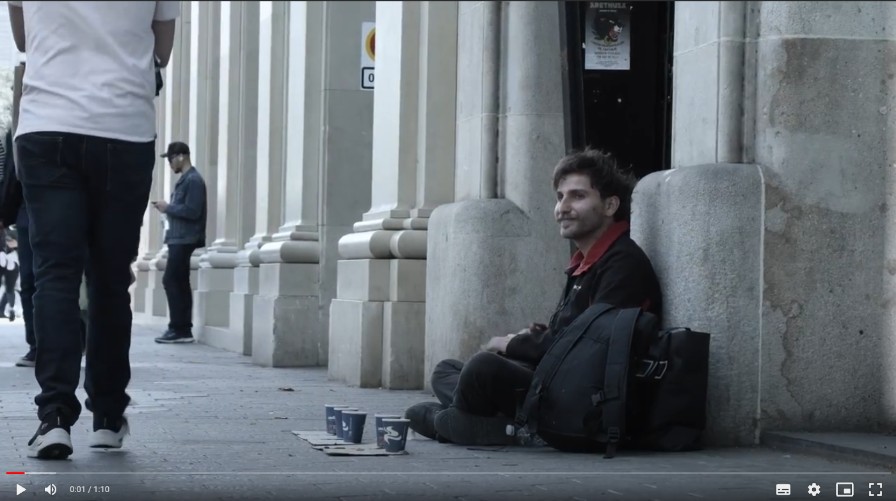

Ideia da Solução
Nossa proposta de solução consiste basicamente na elaboração de uma inteligência artificial que auxilia no transporte de alimentos . Nós trabalhamos juntamente com a Ong Caça fome.
Atualmente a Ong tem um processo de cadastramento de famílias que necessitam de um amparo.Eles fazem o recolhimento de alimentos , que são providos de doações e posteriormente a esse processo , eles produzem cestas básicas . E independente do local em que a pessoa está situada eles fazem esse transporte até a região em que essas pessoas moram .
A nossa proposta consiste em uma auxilio para esse transporte , nossa IA sairia da sede da Ong completa com as cestas e iria até a região desejada . Cada família ao realizar o cadastro do auxílio , eles receberam um código e o dia em que a IA chegaria no local com as cestas básicas .
No dia da chegada da IA as famílias iriam até a região pré definida e digitarem o código que receberam ao fazerem o cadastro em um teclado numérico . Esse teclado liberaria o compartimento para o indivíduo tenha o acesso para pegar a cesta básica
Produções

Video
Vídeo: No começo do vídeo usamos tons insaturados para mostrar a tristeza da realidade sobre a fome ao redor do mundo. Já quando começamos a falar sobre as metas da ODS2 usamos tons saturados para mostrar a esperança na luta contra a fome . E ao final do vídeo temos a demonstração do nosso mascote .
Mascote
DITU: Para o nosso mascote, DITU, nos inspiramos na EVA do filme da Disney Wall-E, um robô flutuante que tem no topo de sua cabeça uma plantinha que representa sua vida.
Para a paleta de cor pensamos em fazer seu corpo metálico e cinza igual um robô, os botões contém azul, vermelho e amarelo, representando água e fome.
Sobre as formas fizemos ele arredondado mostrando seu lado bondoso, mas ao mesmo tempo com formatos quase triangulares para representar sua agilidade e inteligência.

3D
3D: Para o 3D tivemos a ideia de um carrinho que seja controlado pela inteligência artificial que criamos que separa comida para vilarejos e comunidades, no carrinhos teremos armários individuais para cada família que vão armazenar o tanto de comida necessária para suprir
as necessidades de cada uma, tendo um código que será enviada três dias antes por correios ou por e mail dependendo da realidade dessa família que irá destrancar esse armário. A ideia é o carrinho é ir em frotas e chegar na casa das pessoas poupando o trajeto para pontos de doação de alimentos.
Caça Fome
A ONG Caça-Fome começou como uma campanha emergencial em abril de 2020, com o objetivo de ajudar pessoas em situação de risco ou vulnerabilidade durante a pandemia do coronavírus. Eles distribuíram alimentos (cestas emergenciais) e máscaras de proteção para aqueles que precisavam. A campanha foi bem-sucedida e, em pouco mais de dois meses, foram distribuídas 200 toneladas de alimentos. Como resultado, o Instituto Caça-Fome foi fundado e é gerido pelo empresário paulista Daniel Ribeiro.
O Instituto Caça-Fome possui três projetos principais:
- Caça Fome De Família para Família , Caça Fome Comunidades e Costura Vida.
O diferencial do Instituto é o sistema de atendimento e cadastro de famílias, que permite identificar os casos mais urgentes e entregar alimentos por meio de "cestas emergenciais" a um custo inferior em comparação com as cestas básicas
Ideias de Divulgação
Para nossas ideias de divulgação pensamos em duas estrátegias , obviamente linkando com os ensinamentos que tivemos nas aulas de Marketing Digital . Pensamos em : Estratégias de Inbound Marketing e Ações em Redes Sociais .
Estratégias Inbound Marketing
Um comercial que pretendesse promover a Ong e arrecadar mais alimentos . Nesse comercial se demonstraria visualmente quais são as logísticas ,os processos e o funcionamento feitos na Ong . Na apresentação desses projetos estaria um vídeo mostrando qual a forma de transporte das cestas básicas , sendo assim , mostrando a IA .
Fazer parcerias com empresas que abordam sobre tecnologia e que estão engajadas na resolução do problema da fome , por exemplo a Microsoft, Dell, Amazon e etc;
Sempre que forem fazer eventos de arrecadação de alimentos , a nossa Ia seria mostrada é apresentada como um auxílio no transporte das cestas básicas;
Estratégias de Redes Sociais
Para noção de comunidade, nós tivemos a ideia de criar um grupo em alguma rede social que mostrasse as principais ONGs que trabalham no combate à fome. Com o intuito das pessoas saberem em quais Ong 's fazerem as doações . Sendo assim mostrando como funciona o transporte das cestas pela Ia e afins.
Para o uso da Autenticidade nós consideramos utilizar as redes sociais . Nós avaliamos colocar a opinião das pessoas que são atendidas pela Ong Caça fome e a opinião delas referente em receber as cestas por uma Inteligência Artificial.